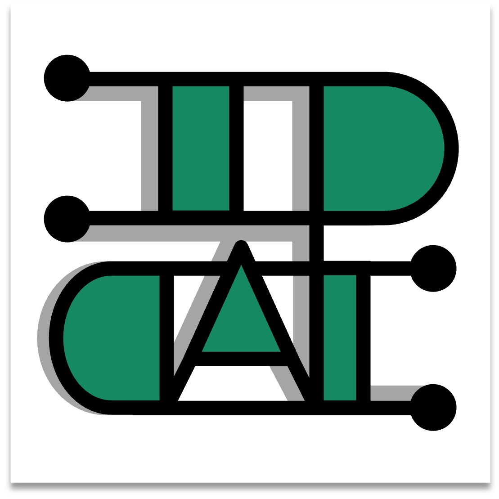
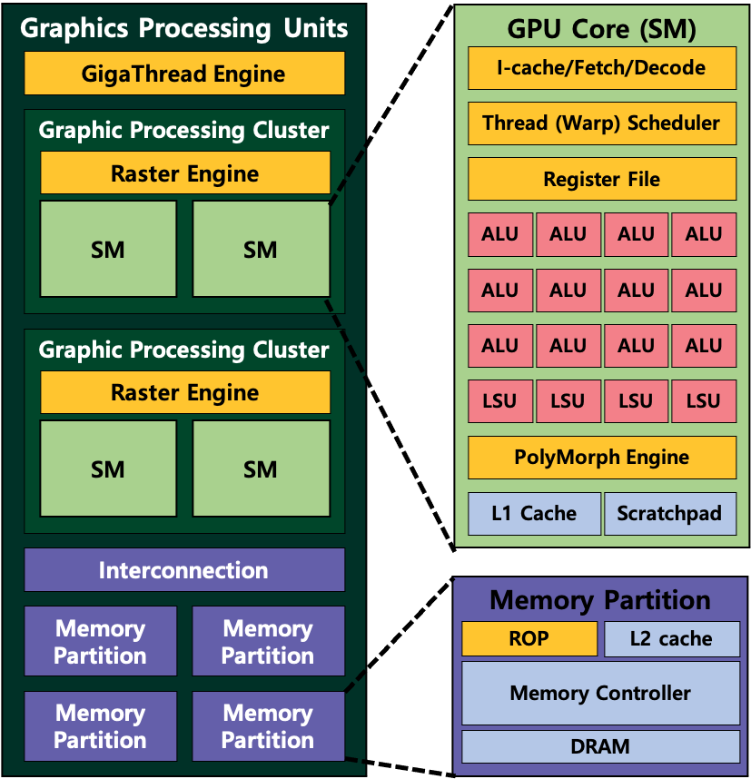
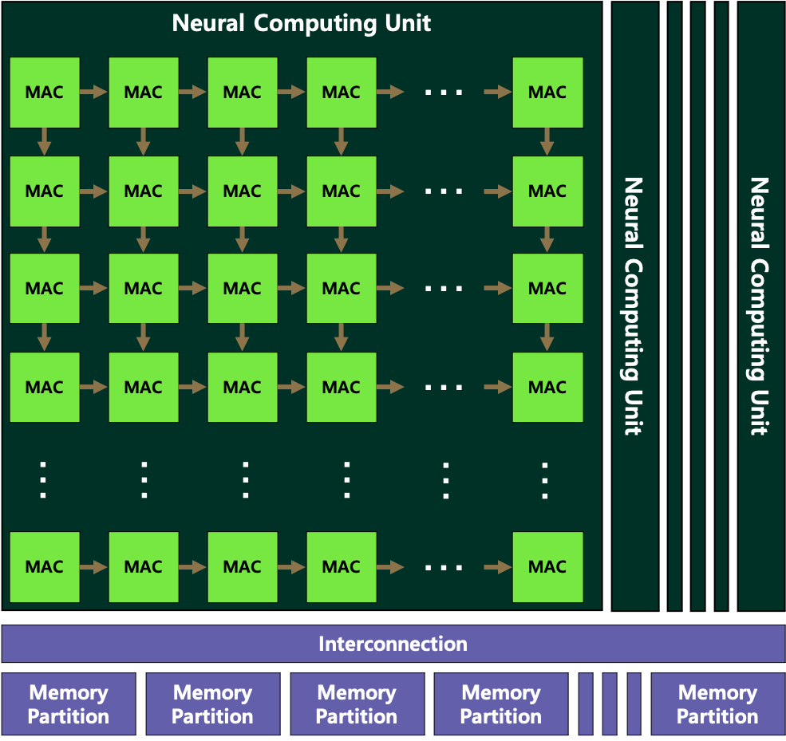

Intelligence System and Parallel Computer Architecture Lab

The Intelligence system and Parallel Computer Architecture (IP-CAL) Lab was founded in March 2021 at Ewha Womans University. Our research focuses on the architecture of modern parallel computing systems, including Graphics Processing Units (GPUs), machine learning accelerators, and general-purpose parallel processors, with the goal of improving the performance, efficiency, and programmability of next-generation hardware. We combine cycle-accurate simulation, real hardware profiling, and system software design to uncover architectural bottlenecks and to propose new hardware and software solutions. Detailed research topics are described below, and our recent papers, projects, and lab news are introduced throughout this website. If you are interested in our research, you are always welcome to visit our lab or get in touch with us.Research Areas

Graphics Processing Unit (GPU) Micro-Architecture
GPUs were first developed to accelerate graphics applications. Games are one major application that relies on the performance of GPUs. When the game application is launched, GPUs start to create 60~120 images every second using a massive number of GPU processors. This massive number of processors recently has begun to be used for general purpose applications such as machine learning algorithms, simulations, and many other applications instead of graphics applications. This paradigm is known as General-Purpose Computing on Graphics Processing Unit (GPGPU).
Our goal is to maximize the performance of GPUs when general-purpose applications such as machine learning algorithms, simulations, and many more are executed on the GPU hardware. We first identify the bottleneck points on the GPU architecture and propose a new modified architecture that can remove the bottleneck points. To verify our ideas, C/C++/Python based cycle-accurate simulations are used.

Machine Learning Accelerator
Machine learning algorithms have been applied in various areas such as image recognition, voice speech recognition, translation, text classification, and more. These algorithms are traditionally operated on Central Processing Units (CPUs) and Graphics Processing Units (GPUs). Especially, GPUs are widely used for the execution of applications. However, CPUs and GPUs are not designed for machine learning algorithms, there have been several issues in terms of performance and power consumption. To resolve the problems, various machine learning accelerator designs have been proposed by researchers. One famous design is using a systolic array that has many small processing units which are only designed to perform Multiply-And-Accumulate (MAC) operations. These small processing units are connected only to their neighbor so that the data can be transferred from one processing unit to the other processing unit.
Our goal is to analyze the newly proposed machine learning accelerators. By doing this, we can find the performance bottleneck points or can detect the unnecessary processing execution cycles. Based on our analysis, we can propose advanced hardware accelerators for machine learning applications.
IP-CAL News!
Papers & Awards
- [2026 Jul.] The papers titled “Make Every Batch Count: Fault Entry Merging for Efficient Batching in Unified Virtual Memory” (Jane, SeJin) and “Complex Tensor Core: Software-Hardware Co-Design for Accelerating Complex-Valued Neural Networks on GPUs” (Eunbi, Jennifer, Ji Yeong, Jane) have both been accepted to MICRO 2026.
- [2026 Apr.] The paper titled “Restructuring the Implicit GEMM Workflow for Complex-Valued Convolution” (Jaeeun, Eunbi, Jane) has been accepted to IEEE Access.
- [2025 Oct.] Jane has been selected as the best performer in the AI Convergence Project.
- [2025 Aug.] The papers titled “Understanding Distributed Training of Large Language Models with Unified Virtual Memory” (Jane, Eunbi) and “HALO: Hybrid Systolic Arrays via Logical Partitioning for Acceleration of Complex-Valued Neural Networks” (Ji Yeong, Eunbi, SungHee, Jane) have both been accepted to IISWC 2025.
- [2025 Apr.] Jiyeong has been selected as the best performer in the AI Convergence Project.
- [2025 Mar.] The paper titled "Hierarchical Traversal Stack Design Using Shared Memory for GPU Ray Tracing" by Eunsoo and Eunbi has been accepted to ISPASS 2025.
- [2025 Feb.] "Beyond VABlock: Improving Transformer Workloads through Aggressive Prefetching" by Jane and Ikyoung has been accepted in the Journal of Systems Architecture (JSA).
- [2024 Nov.] The paper titled "Warped-Compaction: Maximizing GPU Register File Bandwidth Utilization via Operand Compaction" by Eunbi has been accepted to HPCA 2025.
- [2024 Feb.] "Conflict-Aware Compiler for Hierarchical Register File on GPUs" by Eunbi and Eun Seong has been accepted in the Journal of Systems Architecture (JSA).
- [2023 Aug.] Eunbi's first co-authored paper, "Triple-A," has been accepted in IEEE Embedded System Letters (ESL).
- [2023 Jul.] Eun Seong and Eunbi are honored with the Paper Award (우수논문상) at the 2023 Summer Annual Conference of IEIE.
Welcome
- [2026 Jul.] Thu Trang Tran has joined our group as an undergraduate intern.
- [2026 Feb.] Youngseo Hwang has joined our group as an undergraduate intern.
- [2026 Jan.] Minkyoung Lee and Siyeon Kang have joined our group as undergraduate interns.
- [2025 May] SeJin Park has joined our group as undergraduate interns.
- [2025 Jan.] Ga In Jeong and SungHee Yum have joined our group as undergraduate interns.
- [2024 Sep.] Jane Rhee, Eunbi Jeong, Seonwoo Kim have started their master's degree.
- [2024 Mar.] Eun Soo Jung and Jiyeong Yi have started their master's degree.
- [2024 Jan.] Jiyeong Yi has joined our group as undergraduate interns.
- [2023 Jul.] Ikyoung Choi has joined our group as undergraduate interns.
- [2023 Apr.] Seonwoo Kim has joined our group as undergraduate interns.
- [2023 Jan.] Jae Eun Hwang and Eunbi Jeong have joined our group as undergraduate interns.
- [2022 Jan.] Eun Soo Jung, Yeonhee Jung, and Eun Seong Park have joined our group as undergraduate interns.
- [2021 Jul.] Minyoung Lee, Jane Rhee, and Myeong Ji Kim have joined our group as undergraduate interns.